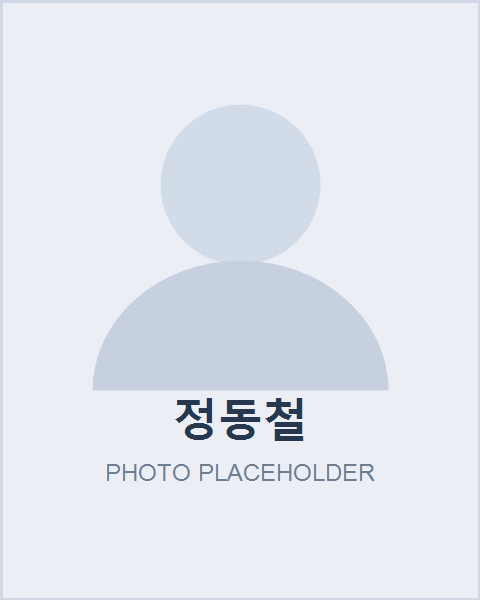
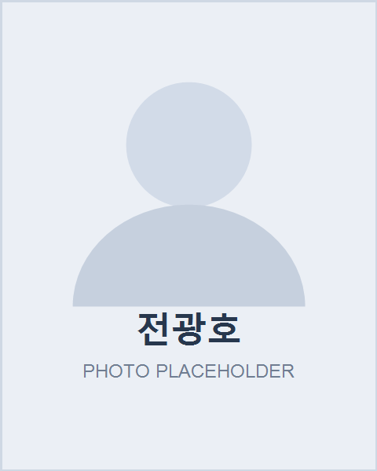
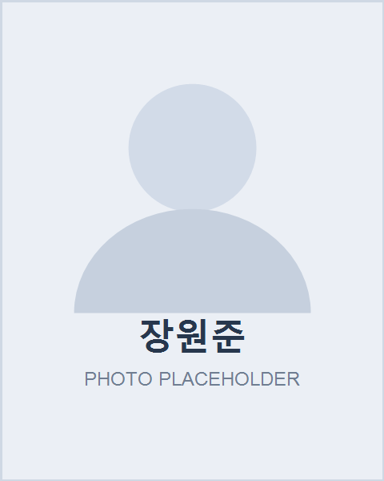
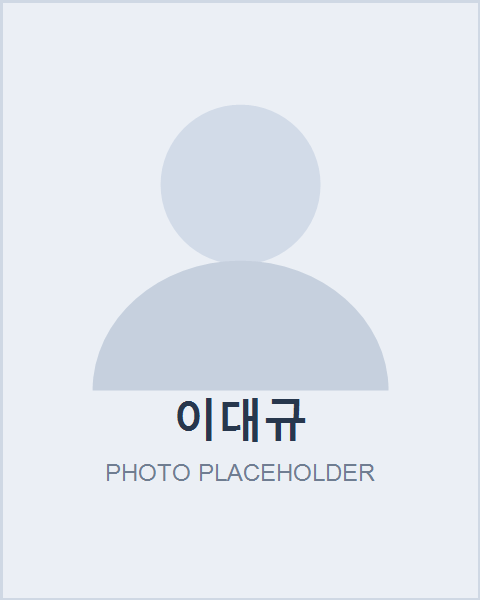

경량 탄소섬유 복합체
- 5세대 전차·장갑차용 탄소섬유 기반 세라믹 복합장갑 개발
- 저고도 비행 고정익·회전익 비행체 조종사 방호캡슐 개발
- 전자파 차폐·흡수, 방사방호 기능을 담은 다공성 탄소섬유 복합체
- 고내열, 고내삭마 특성을 갖는 항공우주용 탄소섬유 복합체
Research Areas
첨단방위산업학과와 대학 내외 협력 연구진의 전문 분야를 연결해 방위산업 기술개발 역량을 소개합니다.
정책, 전략, 초고온 소재, 자율무인체계, 양자·AI 보안, 복합재 분야를 아우르는 학과 핵심 연구진입니다.




항공우주, 신소재, 양자시스템, 기계설계, 자원에너지, 물리학 기반 연구 역량을 방위산업 기술로 확장합니다.


국내외 연구기관과의 협력을 통해 첨단 시험평가와 구조 건전성 진단 기술을 확장합니다.